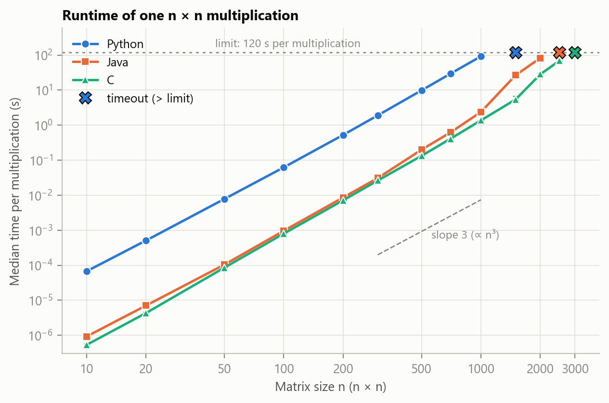
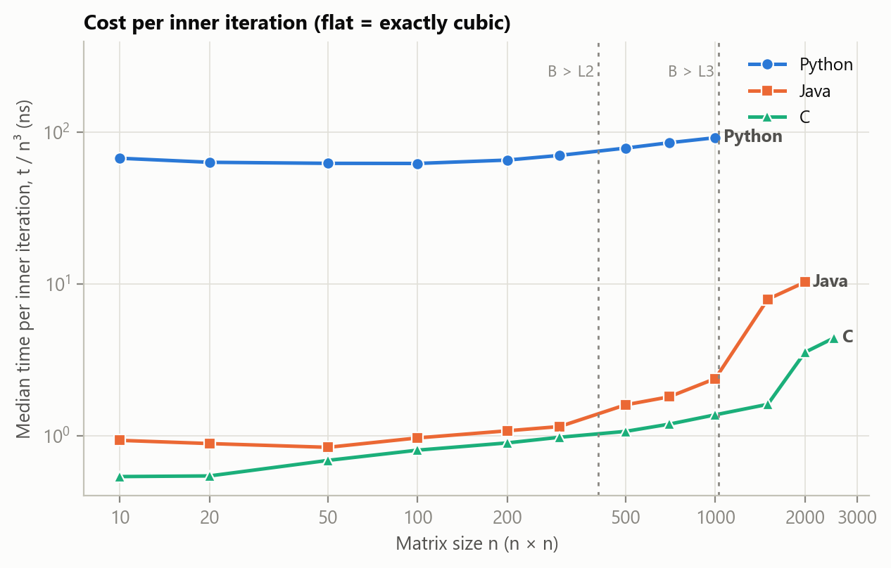
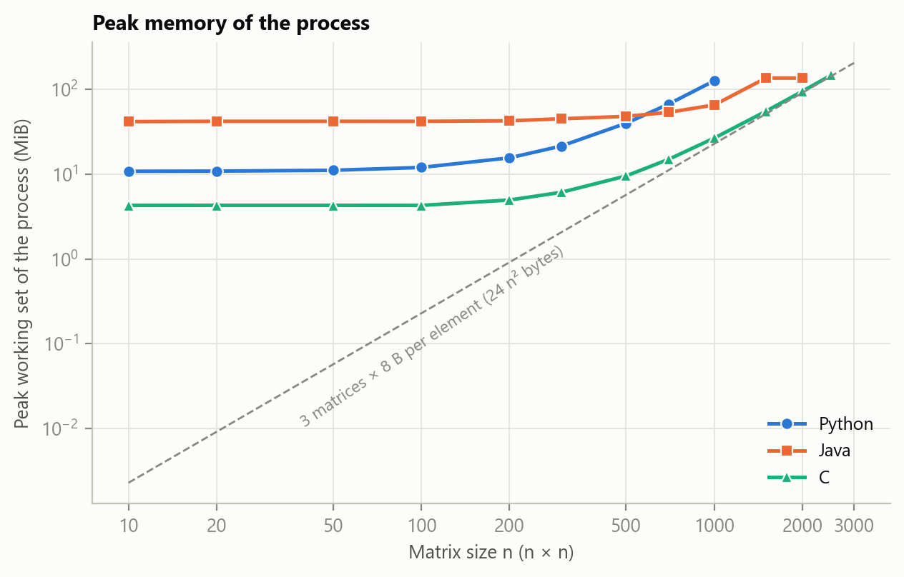
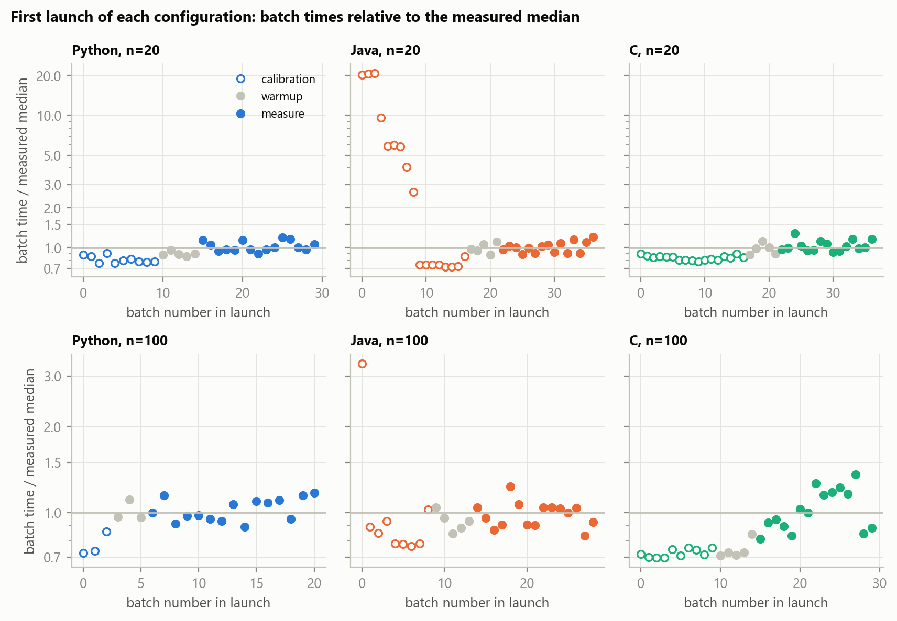

double matrices in Python, Java and C, on one Windows laptop (Intel Core i5-1135G7), with identical input files, loop order and timing protocol.
Sizes were increased until a single multiplication exceeded 120 s: the largest size that met the budget was n = 1000 for Python, 2000 for Java and 2500 for C.
All three implementations return bit-identical results. Kernel time (median and interquartile range over repeated batches and up to three process launches) grows roughly, but not exactly, cubically:
the log-log slope over n = 100–1000 is 3.18 for Python, 3.39 for Java and 3.23 for C, and the time per inner iteration rises with n in every language, steeply in C and Java above n ≈ 1500.
Python is about 67–78× slower than C (≈ 73× typically); Java is 1.2–1.7× slower than C up to n = 1000 but 4.9× slower at n = 1500.
Peak process memory beyond the runtime baseline is about 7.9 bytes per matrix element in C, 8.6 in Java (plus a 42 MiB JVM baseline) and 40.7 in Python.
The conclusions hold for these implementations, settings, inputs and this machine; the causes of the memory-related slowdowns were not measured with hardware counters and are discussed as hypotheses.Multiplying two dense n × n matrices with three nested loops needs n³ multiply-add operations and is the standard starting point for talking about performance and scalability [1]. The algorithm is identical in every language, but the cost of each operation is not: an interpreter, a just-in-time compiler and an ahead-of-time compiler turn the same source into very different machine behaviour, and the way each language lays matrices out in memory decides how well the processor caches can help [2].
Research question. How does the matrix size n affect the runtime and the memory use of the textbook triple-loop
multiplication of dense double matrices implemented in Python, Java and C, under one fixed and documented set of conditions on one machine?
The factor that is changed is n (and, as a second factor, the language); the outcomes are the time of one multiplication and the peak memory of the process.
Predictions (formed from the algorithmic model and the course material before the final measurements; a small pilot was used only to choose sizes and limits, not to tune the code):
float object.Algorithm. For square matrices A and B, Cij = Σk Aik Bkj. Evaluating it directly takes Θ(n³) arithmetic operations [1]. In the loop order i-j-k used here, the inner loop reads A along a row (consecutive addresses) and B along a column (addresses n elements apart), which is the access pattern analysed by Drepper [2, Sec. 6.2.1].
Why the three languages should behave differently. CPython executes bytecode in an interpreter and represents every number as an object, so a list of floats stores
pointers to separate float objects (24 bytes each in this interpreter). HotSpot starts in an interpreter, profiles the code and recompiles hot loops
with its tiered JIT compilers; a double[][] is an array of row arrays holding unboxed 8-byte values. A C compiler produces native code before the program runs,
and a malloced block holds the elements back to back. Compiler options matter: GCC enables, among others, loop interchange at -O3 [5], which could silently change the loop order, so the main comparison uses -O2.
Floating point. All three programs use IEEE-754 binary64 and the same operation order, so their results can be compared bit by bit. In general, different evaluation orders give slightly different sums; for a dot product of length n computed by recursive summation the error is bounded by γn Σk|aikbkj| with γn = nu/(1−nu) and unit roundoff u = 2−53 [3]; this bound is used as the numerical tolerance in Section 3.4.
The required algorithm, the straightforward triple loop with O(n³) work, is implemented in all three languages; no optimised library routine replaces the loops (NumPy is used only to check results, Section 3.4). The loops are, literally:
Python
for i in range(n):
for j in range(n):
s = 0.0
for k in range(n):
s += a[i][k] * b[k][j]
c[i][j] = s
Java
for (int i = 0; i < n; i++)
for (int j = 0; j < n; j++) {
double sum = 0.0;
for (int k = 0; k < n; k++) sum += a[i][k] * b[k][j];
c[i][j] = sum;
}
C
for (int i = 0; i < n; i++)
for (int j = 0; j < n; j++) {
double sum = 0.0;
for (int k = 0; k < n; k++) sum += a[(size_t)i*n + k] * b[(size_t)k*n + j];
c[(size_t)i*n + j] = sum;
}
| Python | Java | C | |
|---|---|---|---|
| Runtime / compiler | CPython 3.12.0 (python.org build, MSC v.1935), standard library only | openjdk version 25.0.2 2026-01-20 (HotSpot, tiered C1/C2 JIT, G1 GC) | GCC (MinGW-W64 x86_64-ucrt-posix-seh, built by Brecht Sanders, r2) 16.2.0 |
| Flags / settings | default interpreter (no -O) | -Xmx4g; all other JVM options default | -std=c11 -Wall -Wextra -O2; no -march, no -ffast-math |
| Matrix storage | list of n row lists; every element is a pointer to a 24-byte float object | double[n][n]: array of n row arrays of unboxed 8-byte values | one malloced double[n*n] per matrix, row-major, 8 bytes per element |
| Kernel timer | time.perf_counter_ns | System.nanoTime | QueryPerformanceCounter |
| Loop order, arithmetic | i-j-k, local accumulator, c[i][j] assigned once | same | same |
| Sizes n planned | 10, 20, 50, 100, 200, 300, 500, 700, 1000, 1500 | 10, 20, 50, 100, 200, 300, 500, 700, 1000, 1500, 2000, 2500 | 10, 20, 50, 100, 200, 300, 500, 700, 1000, 1500, 2000, 2500, 3000 |
The accumulator is a local variable in all three languages so that every language performs the same additions in the same order. (The course’s JMH example accumulates directly into
c[i][j]; that variant is not used here.) The Python version is deliberately the unoptimised textbook loop, with no hoisting of row lookups.
The unavoidable differences are the storage layouts above, the fact that Python allocates one new float object per result element inside the timed kernel, and that the JVM compiles
code at run time and runs helper threads. Storage layout and compiler flags are not varied in this study; they appear only as possible explanations in Section 5.
All implementations read the same files A_n.bin and B_n.bin (raw little-endian binary64, row-major, values uniform in [0, 1)). They are generated with NumPy’s
default_rng([20261012, n, which]), so each file is reproducible on its own, and their SHA-256 hashes are stored in inputs/checksums.json. Every language therefore multiplies
exactly the same logical matrices; no language uses its own random-number generator.
| Item | Value |
|---|---|
| Machine | HP 250 G8 Notebook PC, Windows 11 Pro (build 26200) |
| CPU | 11th Gen Intel(R) Core(TM) i5-1135G7 @ 2.40GHz: 4 physical cores, 8 logical processors; L2 5 MiB in total (1.25 MiB per core), L3 8 MiB shared |
| RAM | 15.7 GB |
| Power | AC power, Windows power plan “Equilibrado” (Balanced); no change was made to frequency or affinity settings |
| Threads used by the kernel | 1 in every language (no parallel code, no numerical library). The JVM additionally runs its own JIT-compiler and GC threads. |
| Analysis tools | Python 3.13.9 (Anaconda) with NumPy 2.3.5, pandas 2.3.3, SciPy 1.16.3, Matplotlib 3.10.6 |
Before any benchmark, scripts/run_tests.py multiplies test matrices with each implementation and compares the result with references (Table 3 in Section 4.1 summarises the outcome). The checks are: identity and zero matrices
(bit-exact); hand-computed 2 × 2 and 3 × 3 products (bit-exact); random integer-valued matrices stored as doubles, where every partial sum is exactly representable so any summation order must agree with NumPy’s integer product (bit-exact);
random real matrices in [0, 1) and [−1, 1) and the shared benchmark inputs, compared (a) with an exact rational reference on 200 random entries and (b) with NumPy’s A @ B on all entries, against the bound γn Σk|aikbkj| of Section 2
(a result passes if the error is at most one bound against the exact value, and at most two bounds against NumPy, whose own rounding error is of the same size). Finally, the three implementations must return bit-identical matrices; this holds because they use the same
operation order and no fused multiply-add (GCC’s default for -std=c11 is -ffp-contract=off [5]). The sum of all elements of C is also printed after every timed batch, which both proves that the computation ran and lets the checksums be compared across languages.
perf [4, 10]. Here one small harness with the same batching, warm-up, repetition and memory-measurement rules is used for all three languages, because the comparison needs the same timing boundary everywhere
(perf is not available on Windows). Its behaviour is documented in this section and its raw output is kept; it was not cross-checked against JMH.perf_counter is backed by QueryPerformanceCounter (resolution 100 ns on this machine) [7], the same source as the C program [8].config/experiment.json), followed by 5–15 measured batches. Warm-up and calibration batches are kept in the raw file but never enter a statistic. Five or more measured batches are collected for every configuration.results/raw_samples.csv, and no observation was removed.noinline) so that repeated calls in a batch cannot be merged.Metric: the peak working set of the whole process (PeakWorkingSetSize of PROCESS_MEMORY_COUNTERS_EX [9]) read by the driver with GetProcessMemoryInfo after the process ends, one value per launch; peak committed (private) bytes, PeakPagefileUsage, is recorded as well.
It includes the language runtime, the loaded input data, the result and all temporary data, so it is not the same quantity as managed-heap use or as 24n² bytes of array storage, and the figures must not be compared as if it were. The runtime baseline is estimated from the smallest size (n = 10, three matrices of 800 bytes).
Limits of the metric: working set counts resident pages only, the JVM reserves and touches memory in its own way, and a single peak per launch gives no information about when it occurred. CPU utilisation was not measured because it is not needed for the conclusions.
The size sequence is roughly geometric (10, 20, 50, 100, 200, 300, 500, 700, 1000, 1500, 2000, 2500, 3000 where feasible) and avoids powers of two, whose large strides map matrix columns onto few cache sets and would confound the trend with an associativity effect. It spans the three regimes of P3 (B inside L2, inside L3, larger than L3). Budgets were declared before the final run: at most 120 s per single multiplication (a launch that prints nothing for 120 s is killed and recorded as a timeout), at most 30 min per launch and 4 GiB of memory (also the JVM heap cap). The largest size that met the limits is reported separately from the largest size attempted (Section 4.4); timeouts are reported as results at their limit and never given an invented time. Fixed in the main comparison: machine and power state, input files, loop order, numeric type, accumulator style, single-threaded kernels, timing boundary, batch rule, limits and, per language, the compiler/runtime settings in Table 1. For scale: three n × n binary64 matrices need 24n² bytes, 216 MB at n = 3000, far below the memory budget, so time, not memory, is the binding limit in this study.
All 84 checks passed (84/84; Table 3). For random real matrices the largest error was 0.31 times the theoretical bound, so the bound is a meaningful tolerance and the results are not merely “close”.
The sum of all elements of C that every program prints after every timed batch was identical in all three languages for every size (results/tables/checksums.csv),
and within a launch every batch gave the same checksum, so the timed work was really performed on every batch.
| Check | Sizes n | Criterion | Passed | Worst error ÷ bound (exact / NumPy) |
|---|---|---|---|---|
| I × X = X | 1, 7, 33 | bit-exact | 9/9 | – |
| X × I = X | 1, 7, 33 | bit-exact | 9/9 | – |
| 0 × X = 0 | 1, 7, 33 | bit-exact | 9/9 | – |
| hand-computed 2 × 2 product | 2 | bit-exact | 3/3 | – |
| hand-computed 3 × 3 product | 3 | bit-exact | 3/3 | – |
| random integers 0..9 vs NumPy int64 product | 50, 100 | bit-exact | 6/6 | – |
| random reals in [0, 1) | 10, 100, 200 | error ≤ γₙ Σ|aᵢₖbₖⱼ| | 9/9 | 0.306 / 0.324 |
| random reals in [−1, 1) | 10, 100, 200 | error ≤ γₙ Σ|aᵢₖbₖⱼ| | 9/9 | 0.183 / 0.291 |
| the shared benchmark inputs | 100, 300 | error ≤ γₙ Σ|aᵢₖbₖⱼ| | 6/6 | 0.086 / 0.043 |
| C, Java and Python results identical | 1, 2, 3, 7, 10, 33, 50, 100, 200, 300 | bit-identical | 21/21 | – |
| Total | 84/84 |
Table 4 and Figure 1 give the time of one multiplication. On the log-log plot the three curves are nearly parallel straight lines from n = 10 to n ≈ 1000: the cost of one multiplication goes from 67.6 µs (Python), 930 ns (Java) and 537 ns (C) at n = 10 to 92.4 s, 2.38 s and 1.37 s at n = 1000. Above that, the Java and C curves bend upwards (Java first); Python stops at n = 1000 because the next size, 1500, exceeded the 120 s limit.
| n | Python | Java | C |
|---|---|---|---|
| 10 | 67.6 µs [63.3 µs–74.3 µs] | 930 ns [869 ns–976 ns] | 537 ns [504 ns–565 ns] |
| 20 | 509 µs [484 µs–527 µs] | 7.09 µs [6.73 µs–7.74 µs] | 4.34 µs [4.14 µs–4.59 µs] |
| 50 | 7.82 ms [7.16 ms–8.72 ms] | 105 µs [102 µs–108 µs] | 85.8 µs [81.5 µs–92.1 µs] |
| 100 | 62.5 ms [58.7 ms–65.2 ms] | 965 µs [935 µs–1.03 ms] | 802 µs [757 µs–975 µs] |
| 200 | 526 ms [507 ms–563 ms] | 8.6 ms [8.35 ms–8.89 ms] | 7.16 ms [6.94 ms–7.62 ms] |
| 300 | 1.91 s [1.85 s–2 s] | 31 ms [30 ms–32.7 ms] | 26.3 ms [25.3 ms–27.9 ms] |
| 500 | 9.86 s [9.63 s–10.1 s] | 200 ms [189 ms–206 ms] | 133 ms [130 ms–141 ms] |
| 700 | 29.3 s [29.1 s–30 s] | 618 ms [589 ms–693 ms] | 408 ms [387 ms–534 ms] |
| 1000 | 92.4 s [92.2 s–92.9 s] | 2.38 s [2.32 s–2.48 s] | 1.37 s [1.35 s–1.39 s] |
| 1500 | not run / timeout | 26.8 s [26.8 s–26.8 s] | 5.43 s [5.34 s–6.64 s] |
| 2000 | not run / timeout | 82.3 s [81.9 s–82.8 s] | 28.4 s [27.2 s–30.2 s] |
| 2500 | not run / timeout | not run / timeout | 68.8 s [68.4 s–68.9 s] |

| n | Python | Java | C |
|---|---|---|---|
| 10 | 67.61 | 0.93 | 0.54 |
| 20 | 63.58 | 0.89 | 0.54 |
| 50 | 62.57 | 0.84 | 0.69 |
| 100 | 62.46 | 0.97 | 0.80 |
| 200 | 65.74 | 1.08 | 0.89 |
| 300 | 70.60 | 1.15 | 0.98 |
| 500 | 78.88 | 1.60 | 1.07 |
| 700 | 85.55 | 1.80 | 1.19 |
| 1000 | 92.38 | 2.38 | 1.37 |
| 1500 | – | 7.94 | 1.61 |
| 2000 | – | 10.29 | 3.54 |
| 2500 | – | – | 4.40 |

If the cost were exactly cubic, t/n³ (Figure 2, Table 5) would be flat. It is almost flat only for small n: in Python it stays at 63–66 ns up to n = 200 and then rises to 92 ns at n = 1000 (48 % above n = 100). In C it grows from 0.54 ns at n = 10 through 1.07 ns (500) and 1.37 ns (1000) and jumps between n = 1500 (1.61 ns) and n = 2000 (3.54 ns) to 4.40 ns at 2500. Java starts at 0.84–0.93 ns, reaches 2.38 ns at 1000, then 7.9 ns at 1500 and 10.3 ns at 2000. The fitted slope over the sizes all three languages completed (n = 100–1000, Table 6) is 3.18 (95 % CI 3.13–3.23) for Python, 3.39 (3.23–3.56) for Java and 3.23 (3.17–3.28) for C; none of the intervals contains 3, so the growth is cubic only approximately. The local exponents (Table 7) show where the extra growth appears: for C the steep step is between n = 1500 and 2000 (local exponent 5.7), for Java between 1000 and 1500 (6.0).
Table 8 gives the ratios between languages. Python is 126× slower than C at n = 10 (fixed loop overhead matters most there) and between 67× and 78× for n ≥ 100. Java is 1.18–1.20× slower than C for n = 100–300, 1.5–1.7× for n = 500–1000, and 4.9× and 2.9× at 1500 and 2000. The Java value at n = 1500 rests on one launch (the second launch failed, Section 4.4); the one measured batch of the failed launch, 26.3 s, is within 2 % of it.
| Language | Sizes | Points | Exponent | 95 % CI | R² |
|---|---|---|---|---|---|
| Python | n=100-1000 | 6 | 3.18 | 3.13–3.23 | 0.9999 |
| Java | n=100-1000 | 6 | 3.39 | 3.23–3.56 | 0.9988 |
| C | n=100-1000 | 6 | 3.23 | 3.17–3.28 | 0.9998 |
| Local exponent between consecutive sizes | → 20 | → 50 | → 100 | → 200 | → 300 | → 500 | → 700 | → 1000 | → 1500 | → 2000 | → 2500 |
|---|---|---|---|---|---|---|---|---|---|---|---|
| Python | 2.91 | 2.98 | 3.00 | 3.07 | 3.18 | 3.22 | 3.24 | 3.22 | – | – | – |
| Java | 2.93 | 2.94 | 3.21 | 3.16 | 3.16 | 3.65 | 3.36 | 3.78 | 5.97 | 3.90 | – |
| C | 3.01 | 3.26 | 3.22 | 3.16 | 3.21 | 3.17 | 3.33 | 3.40 | 3.39 | 5.75 | 3.97 |
| n | Python ÷ C | Java ÷ C | Python ÷ Java |
|---|---|---|---|
| 10 | 126.0× | 1.73× | 72.7× |
| 20 | 117.3× | 1.64× | 71.8× |
| 50 | 91.2× | 1.22× | 74.8× |
| 100 | 77.9× | 1.20× | 64.7× |
| 200 | 73.5× | 1.20× | 61.1× |
| 300 | 72.4× | 1.18× | 61.5× |
| 500 | 74.0× | 1.50× | 49.4× |
| 700 | 71.9× | 1.51× | 47.5× |
| 1000 | 67.4× | 1.73× | 38.9× |
| 1500 | – | 4.94× | – |
| 2000 | – | 2.90× | – |
| 2500 | – | – | – |
Table 9 and Figure 3 show the peak working set. Every process has a runtime baseline that dominates at small n: 4.3 MiB for C, 10.8 MiB for Python and 41.8 MiB for Java.
Above the baseline, C needs 7.8–8.0 bytes per matrix element at n ≥ 1000 (Table 10), i.e. exactly the 8 bytes of array storage per element of A, B and C.
Java needs 8.2–12.9 bytes per element for n = 500–1000 (close to 8, plus its larger baseline; below that the net amount is too small to separate from baseline noise). At n = 1500 and 2000 its peak is the same, 136 MiB (14.7 and 8.3 bytes per element): the JVM grows its heap in steps,
so the working set of the JVM does not track live data exactly; I did not investigate this further. Python needs 40.7 bytes per element (40.4–41.4), about five times C: each element is an 8-byte pointer to a separate float object of 24 bytes (sys.getsizeof(1.0)),
and the figure is consistent with the allocator rounding that object up to 32 bytes (8 + 32 = 40) [6], although I did not verify the rounding in the interpreter source.
As a result Python overtakes Java in total memory between n = 500 (40 vs 48 MiB) and 700 (67 vs 54 MiB), and at n = 1000 it uses 127 MiB against 66 (Java) and 27 (C).
| n | Python | Java | C | 24n² bytes |
|---|---|---|---|---|
| 10 | 10.8 (10.8–10.9) | 41.8 (41.7–41.8) | 4.3 (4.3–4.3) | 0.00 |
| 20 | 10.9 (10.9–10.9) | 42.1 (41.9–42.2) | 4.3 (4.3–4.3) | 0.01 |
| 50 | 11.1 (11.1–11.2) | 42.1 (42.1–43.0) | 4.3 (4.3–4.3) | 0.06 |
| 100 | 12.0 (12.0–12.0) | 42.1 (42.0–42.1) | 4.3 (4.3–4.3) | 0.23 |
| 200 | 15.6 (15.5–15.6) | 42.7 (42.7–42.8) | 5.0 (5.0–5.0) | 0.92 |
| 300 | 21.5 (21.5–21.5) | 45.1 (44.2–45.1) | 6.1 (6.1–6.1) | 2.06 |
| 500 | 40.0 (39.9–40.0) | 48.2 (48.0–48.2) | 9.6 (9.5–9.6) | 5.72 |
| 700 | 67.4 | 53.8 (53.8–53.8) | 15.0 (15.0–15.0) | 11.22 |
| 1000 | 126.9 | 65.7 (65.6–65.8) | 26.7 (26.7–26.7) | 22.89 |
| 1500 | – | 136.4 | 55.3 (55.3–55.3) | 51.50 |
| 2000 | – | 136.2 | 95.4 (95.4–95.4) | 91.55 |
| 2500 | – | – | 147.0 | 143.05 |

| Language | Baseline at n = 10 (MiB) | Median net bytes per matrix element, n ≥ 300 | Range |
|---|---|---|---|
| Python | 10.8 | 40.7 | 40.4–41.4 |
| Java | 41.8 | 8.7 | 8.3–14.7 |
| C | 4.3 | 7.8 | 7.1–8.0 |
The time budget was the only limit that bound. The largest size that met it was n = 1000 for Python (92.4 s per multiplication), 2000 for Java (82.3 s) and 2500 for C (68.8 s). One larger size was attempted per language (1500, 2500 and 3000); in each case a single multiplication ran past 120 s and the launch was stopped (Table 12). These are timeouts at the limit; their true times are unknown. For orientation only, extrapolating the Python time per iteration at n = 1000 to n = 1500 would give about 312 s, which is an extrapolation, not a measurement. No launch came close to the 4 GiB memory budget (the largest peak working set of any launch was 226 MiB), so there were no memory failures. A fourth launch also failed: launch 61 (second launch of Java at n = 1500) completed two batches (26.3 s per multiplication for the measured one) and then produced no output for more than 120 s; it was stopped after 824 s of wall time. I do not know why (a system suspend or heavy foreground activity are possible); its batches stay in the raw file but are excluded from every statistic, which is why Java at n = 1500 has a single launch.
| Language | Largest size meeting all limits | Largest size attempted | Limit per multiplication |
|---|---|---|---|
| Python | 1000 | 1500 | 120 s |
| Java | 2000 | 2500 | 120 s |
| C | 2500 | 3000 | 120 s |
| Language | n | Outcome | Wall time until stopped | Batches completed before |
|---|---|---|---|---|
| Python | 1500 | timeout_multiplication | 121 s | 0 |
| Java | 2500 | timeout_multiplication | 121 s | 0 |
| C | 3000 | timeout_multiplication | 120 s | 0 |
| Java | 1500 | timeout_multiplication | 824 s | 2 |
Warm-up matters only for Java (Figure 4, results/tables/warmup.csv). Its first batch is 23× slower than the measured median at n = 10, 3.4× at n = 100 and about 1× from n ≈ 300 on, which is why
5 warm-up batches were used for small sizes and why the first (calibration) batches are excluded from all statistics. For Python and C the first batch is within about ±30 % of the median at every size. Within a launch the times also drift:
at n = 100 the C batches of the first launch become about 46 % slower between the first batches and the last measured ones (Figure 4), which is consistent with the CPU leaving its turbo frequency, but I did not record the clock frequency, so this is an interpretation. Pooling launches that ran at different times is meant to average over this.
The interquartile range of the pooled batches is 10 % of the median for the typical configuration (range 0.2–36 %; Appendix A). The widest ranges come from two launches that started while the machine
was fully busy with something else (background CPU 100 % in the 0.5 s before the launch, background_cpu_percent): launch 24 (C, n = 700) was 51 % slower than the other launches of that configuration; launch 62 (C, n = 1500) was 31 % slower than the other launches of that configuration. They were kept (no observation was removed), and the medians stay close to those of the undisturbed launches because the other launches outnumber them.
The median background load before launches was 13 % of all logical processors.

Answer to the research question. Within the tested range, the time of one multiplication grows close to n³ but a little faster, in all three languages, and the language mainly changes the constant: about 73× between Python and C, and a factor of 1.2–1.7 between Java and C for n ≤ 1000, after the JIT has warmed up. Memory beyond a fixed runtime baseline grows with n² and the per-element cost is where the languages differ: about 7.9 bytes in C and 8.6 in Java, about 40.7 in Python.
| Prediction (Section 1) | Outcome | Evidence |
|---|---|---|
| P1: time ∝ n³, t/n³ flat | partly | Straight lines on log-log from 10 to 1000, but slopes 3.18 / 3.39 / 3.23 (Python / Java / C), all CIs above 3, and t/n³ grows 8× in C between n = 10 and 2500. |
| P2: Python ≫ Java ≳ C | confirmed | Python ≈ 73× C; Java 1.2–1.7× C up to n = 1000, but 4.9× at 1500. |
| P3: t/n³ rises once B exceeds L2 (n ≈ 400) and L3 (n ≈ 1000) | partly | The rise is real in all three languages, but it is gradual from small n and the steep step is at n ≈ 1500–2000 for C and 1000–1500 for Java, not at the cache capacities I predicted. |
| P4: memory ≈ 24n² (C), + larger JVM baseline (Java), much larger per element (Python) | confirmed | C 7.9 B/element; Java 8.6 B/element + 42 MiB baseline (heap steps at 1500); Python 40.7 B/element. |
Interpreting the memory-related slowdown (hypotheses, not tested). In the i-j-k order every inner iteration reads one element of B from a different row, so the loop touches n cache lines and n memory pages per column [2].
The gradual rise of t/n³ from small n and the steps at large n fit that picture, but my data do not identify the exact mechanism: the step comes later than the L3 capacity for C, and I had no hardware counters on this machine
(perf, which the course material uses [10], is Linux-only). One possible explanation for the earlier and larger step in Java is its double[n][n] layout, which adds a row-header and row-pointer access to every iteration; the C program, by contrast, uses one contiguous block.
Testing this would need a Java version with a flat array (and a C version with separate rows), which I did not run. The same applies to compiler flags: only -O2 was measured, and -O3 may reorder loops [5].
Other points. The JVM’s start is expensive (first batch 23× slower at n = 10), so Java’s steady state, which is what Table 4 reports, is not what a short program would see. The Python result is for the literal textbook loop on CPython 3.12.0; libraries such as NumPy or other implementations would change the constant by orders of magnitude, but that is a different experiment.
-O2. Other CPUs, operating systems, compilers or runtimes may give different constants and different step positions.In line with the course policy, the use of AI is disclosed here. Tool: Claude Code (Anthropic). Purpose and affected parts: planning the experimental design; writing the benchmark programs, the driver, the test and analysis scripts and the build scripts; debugging the toolchain set-up on Windows; drafting the text of this report; checking that cited sources exist and say what they are cited for. What the AI did not do: no number in this report was produced or estimated by the AI; every result comes from running the published code on the author’s machine, and the raw measurements are in the repository. The author is responsible for understanding the code, for the measurements and for the conclusions.
| Lang. | n | Launches | Samples | Mults per batch | Median | Q1 | Q3 | IQR/med (%) | Min | Max | Launch spread (%) |
|---|---|---|---|---|---|---|---|---|---|---|---|
| Python | 10 | 3 | 45 | 4096 | 67.6 µs | 63.3 µs | 74.3 µs | 16.2 | 55.4 µs | 90.8 µs | 20.4 |
| Python | 20 | 3 | 45 | 512 | 509 µs | 484 µs | 527 µs | 8.3 | 449 µs | 595 µs | 3.4 |
| Python | 50 | 3 | 45 | 32 | 7.82 ms | 7.16 ms | 8.72 ms | 20.0 | 6.01 ms | 19.5 ms | 25.8 |
| Python | 100 | 3 | 45 | 8 | 62.5 ms | 58.7 ms | 65.2 ms | 10.3 | 54.1 ms | 76.1 ms | 9.1 |
| Python | 200 | 3 | 30 | 1 | 526 ms | 507 ms | 563 ms | 10.7 | 475 ms | 626 ms | 13.4 |
| Python | 300 | 3 | 30 | 1 | 1.91 s | 1.85 s | 2 s | 8.0 | 1.76 s | 8.06 s | 9.9 |
| Python | 500 | 2 | 14 | 1 | 9.86 s | 9.63 s | 10.1 s | 4.7 | 9.39 s | 11.2 s | 5.2 |
| Python | 700 | 1 | 5 | 1 | 29.3 s | 29.1 s | 30 s | 3.1 | 29 s | 35.4 s | – |
| Python | 1000 | 1 | 5 | 1 | 92.4 s | 92.2 s | 92.9 s | 0.8 | 91.8 s | 95 s | – |
| Java | 10 | 3 | 45 | 524288 | 930 ns | 869 ns | 976 ns | 11.5 | 822 ns | 1.15 µs | 7.9 |
| Java | 20 | 3 | 45 | 65536 | 7.09 µs | 6.73 µs | 7.74 µs | 14.3 | 6.34 µs | 9.21 µs | 11.9 |
| Java | 50 | 3 | 45 | 4096 | 105 µs | 102 µs | 108 µs | 6.0 | 95.6 µs | 146 µs | 6.0 |
| Java | 100 | 3 | 45 | 256 | 965 µs | 935 µs | 1.03 ms | 10.0 | 870 µs | 1.29 ms | 12.1 |
| Java | 200 | 3 | 45 | 32 | 8.6 ms | 8.35 ms | 8.89 ms | 6.3 | 7.97 ms | 10.4 ms | 2.4 |
| Java | 300 | 3 | 45 | 8 | 31 ms | 30 ms | 32.7 ms | 8.7 | 27.7 ms | 42.7 ms | 12.4 |
| Java | 500 | 3 | 45 | 2 | 200 ms | 189 ms | 206 ms | 8.6 | 183 ms | 265 ms | 6.4 |
| Java | 700 | 3 | 30 | 1 | 618 ms | 589 ms | 693 ms | 16.7 | 548 ms | 3.18 s | 17.3 |
| Java | 1000 | 3 | 30 | 1 | 2.38 s | 2.32 s | 2.48 s | 6.4 | 2.27 s | 2.68 s | 8.4 |
| Java | 1500 | 1 | 5 | 1 | 26.8 s | 26.8 s | 26.8 s | 0.2 | 26.4 s | 26.9 s | – |
| Java | 2000 | 1 | 5 | 1 | 82.3 s | 81.9 s | 82.8 s | 1.0 | 81.4 s | 93 s | – |
| C | 10 | 3 | 45 | 524288 | 537 ns | 504 ns | 565 ns | 11.3 | 472 ns | 842 ns | 11.3 |
| C | 20 | 3 | 45 | 65536 | 4.34 µs | 4.14 µs | 4.59 µs | 10.5 | 3.47 µs | 5.69 µs | 6.8 |
| C | 50 | 3 | 45 | 4096 | 85.8 µs | 81.5 µs | 92.1 µs | 12.3 | 74.6 µs | 271 µs | 12.0 |
| C | 100 | 3 | 45 | 512 | 802 µs | 757 µs | 975 µs | 27.1 | 717 µs | 2.01 ms | 25.2 |
| C | 200 | 3 | 45 | 32 | 7.16 ms | 6.94 ms | 7.62 ms | 9.6 | 6.41 ms | 11.5 ms | 14.3 |
| C | 300 | 3 | 45 | 16 | 26.3 ms | 25.3 ms | 27.9 ms | 9.7 | 23.3 ms | 34.6 ms | 13.3 |
| C | 500 | 3 | 45 | 2 | 133 ms | 130 ms | 141 ms | 8.2 | 121 ms | 200 ms | 10.2 |
| C | 700 | 3 | 30 | 1 | 408 ms | 387 ms | 534 ms | 36.0 | 341 ms | 715 ms | 56.5 |
| C | 1000 | 3 | 30 | 1 | 1.37 s | 1.35 s | 1.39 s | 3.3 | 1.32 s | 1.47 s | 1.0 |
| C | 1500 | 3 | 21 | 1 | 5.43 s | 5.34 s | 6.64 s | 24.0 | 5.26 s | 11.5 s | 31.7 |
| C | 2000 | 2 | 10 | 1 | 28.4 s | 27.2 s | 30.2 s | 10.6 | 26.9 s | 31 s | 12.1 |
| C | 2500 | 1 | 5 | 1 | 68.8 s | 68.4 s | 68.9 s | 0.6 | 68.1 s | 69 s | – |
Everything is in the repository — https://github.com/abdela758/bigdata-matmul — and in Assignment01_Choukri_Materials.zip: source code (src/), the declared protocol (config/experiment.json), the build/test/benchmark/analysis scripts (scripts/),
raw measurements (results/raw_samples.csv, one row per timed batch including warm-up; results/launches.csv, one row per process with status and peak memory), the generated tables and figures, the environment record and the correctness results.
The shared inputs are not stored (up to 144 MB for the largest pair) but are regenerated bit-for-bit by scripts/generate_inputs.py and verified against SHA-256 hashes (--check). The README.md lists the exact build and run commands and the tool versions.
No material from earlier work is reused; the only external material is the course’s benchmarking guidance [10].